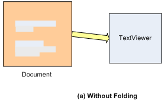
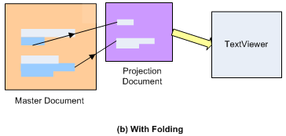
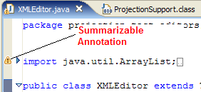
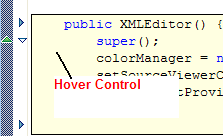
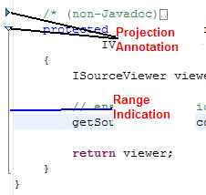
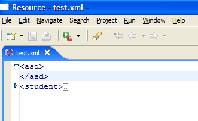

| Eclipse Corner Article |

Summary
Starting with release 3.0, Eclipse allows folding in its text editor. In this article, I explain the new projection infrastructure introduced in the JFace Text framework and show how to extend the XML Editor example provided with Eclipse to allow folding of text.By Prashant Deva (prashant.deva@gmail.com)
March 11, 2005
Starting with Eclipse 3.0 the JFace Text framework has been extended with a feature to allow for collapsing and expanding of text. This can be noticed in the JDT text editor, which allows you to fold individual methods and classes. You can implement folding in your plug-in too, to allow the users to fold text according the structure of your plug-in's documents.
You will notice that 2 new packages have been added to the framework:
org.eclipse.text.org.eclipse.jface.text.projection to implement
folding in a UI dependent manner.org.eclipse.jface.text. Now let's look at the basic idea in the framework that allows it to just show portions of the actual text. Although these concepts have been in the framework since 2.1, a whole new implementation was added in 3.0 to support the additional requirements of text folding.
 
As you can see in the figure (a) above, without folding things were very simple. We had a document to hold the text and a corresponding view to provide the UI for the text. Now things are a little bit more complicated. We have a Master Document, which is like the document we used to use previously. It contains the entire text. However, there is also an additional Projection Document attached to a Master Document. The contents of a projection document are a subset of the contents of the Master Document. In other words, the content of a projection document consists of portions of the Master Document.
As you probabably guessed, when you collapse the text in the editor you see the contents of a projection document containing only the expanded sections.
Now let’s take a look at the org.eclipse.jface.text.projection package.
Keep in mind that you don't actually have to use this package in order to implement
folding in your text editor. The following description is just
to help you understand the concepts behind the folding infrastructure.
The classes we need to concentrate on are:
ProjectionDocument: Represents
a portion of the content of a Master Document.ProjectionDocumentEvent: The event object
sent out by ProjectionDocumentProjectionDocumentManager: Maintains the association between
a Master Document and its Projection Documents.The rest of the classes in the package are for internal use only and we need not bother with them.
The class ProjectionDocumentManager acts as glue between the master
document and its child projection documents, connecting them together. Thus
any change made to the projection document causes a corresponding change
to the master document and vice versa.
Here is an example of using ProjectionDocumentManager:
Document masterDocument = new Document(); ProjectionDocumentManager manager = new ProjectionDocumentManager();ProjectionDocument projectionDocument = (ProjectionDocument) manager.createSlaveDocument(masterDocument);
In the above example we first create a Master Document and
then create a Projection Document off of it by using the ProjectionDocumentManager.
Instances of the class ProjectionDocument
( )
should be created only
by using the ‘factory method’
)
should be created only
by using the ‘factory method’ createSlaveDocument() of ProjectionDocumentManager
and not instantiated through its constructor.
A Projection Document has two methods to define its content from the master document:
public void addMasterDocumentRange(int
offsetInMasterDocument,int lengthInMasterDocument)
public void removeMasterDocumentRange(int
offsetInMasterDocument,int lengthInMasterDocument)Adding more to the previous lines of code:
masterDocument.set("one two");
//removes "one t" from projection document
projectionDocument.removeMasterDocumentRange(0,5);
//adds "ne " to projection document
projectionDocument.addMasterDocumentRange(1,3);
System.out.println(masterDocument.get()); //prints 'one two'
System.out.println(projectionDocument.get());//prints 'ne wo'
Above, we set the contents of the master document to a string. Doing so automatically sets the contents of the projection document to the same value. Then we modify the projection document to contain only certain portions of the master document. Finally we output the contents of both the documents and see that the portion of master document which we removed from the projection document is not printed out but the contents of the master document remain the same.
To actually implement folding in your editor, you don't really need to be concerned
with the details above.
The Eclipse developers have provided a nice package
named org.eclipse.jface.text.source.projection
that takes care of all the details and makes your job far easier.
The centerpiece of this package is the ProjectionViewer class,
which you must use in your plug-in instead of the usual TextViewer
class, to implement folding. A ProjectionViewer internally uses
a ProjectionDocumentManager to manage the display of Projection
Documents, so we don't have to worry about that. It implements the ITextViewerExtension5
interface which is a central part of the UI dependent infrastructure.
ITextViewerExtension5 introduces the concept of
widget coordinates and model coordinates.
A widget coordinate corresponds
to a position on the text viewer while a model coordinate corresponds to a position
on the document. A widget range always has a corresponding model range which
maps to the viewer’s document, while on the other hand a model range can be
either ‘exposed’ or ‘unexposed’. An exposed model range is visible on the viewer
and can thus be mapped to a widget range. Thus when you expand the text in the
viewer, that model range is ‘exposed’ and vice versa. ITextViewerExtension5
contains methods to do the conversion from widget to model coordinates and vice
versa, and to expose model ranges.
Another important class in this package is ProjectionSupport.
This class controls the display and configuration of all the UI elements related
to folding, for example, the painting of those elipsis icons when
you collapse a region, and the vertical column that contains the triangle icons
to expand/collapse text. A ProjectionSupport instance needs to be installed
on a viewer. The XML Editor example shown below demonstrates how to do this
in code.
ProjectionSupport
allows you to specify summarizable annotation types. Basically,
these are the annotations that will appear in the vertical column on the left
when you fold the text that contains them. For example, JDT specifies the ‘error’
and ‘warning’ annotation types as summarizable, so that when you fold the text
that contains a warning or an error, its icon appears on the vertical column
besides the folding arrow, as shown below.

Here is how it is implemented:
fProjectionSupport.addSummarizableAnnotationType(
"org.eclipse.ui.workbench.texteditor.error");
fProjectionSupport.addSummarizableAnnotationType(
"org.eclipse.ui.workbench.texteditor.warning");
The setHoverControlCreator() method
allows you to set up a hover control to display the collapsed text
in a tooltip style box when the use moves the cursor over the arrow.
For example:

The constructor takes an IInformationControlCreator as the argument. You usually
create an anonymous class here. Here is how JDT does it:
fProjectionSupport.setHoverControlCreator(new IInformationControlCreator() {
public IInformationControl createInformationControl(Shell shell) {
return new CustomSourceInformationControl(shell, IDocument.DEFAULT_CONTENT_TYPE);
}
});
To enable folding, we have to specify which regions of the text are collapsible.
We do this by
calling addAnnotation()
adding ProjectionAnnotations to the ProjectionViewer's
ProjectionAnnotationModel. The position allows the annotation to
be attached to certain text in the editor.
The methods of ProjectionAnnotationModel are pretty self-explanatory:
class ProjectionAnnotationModel{
public void collapse(Annotation annotation)
public void expand(Annotation annotation)
public boolean expandAll(int offset,int length)
public void toggleExpansionState(Annotation annotation)
public void modifyAnnotations(Annotation[] deletions,Map additions,
Annotation[] modifications)
}
These methods toggle the annotations to expand/collapse states.
The only method which may be confusing is: modifyAnnotations().
This basically does several deletions, additions, and modifications at once.
The additions
parameter is a Map with Annotation as the key and Position as the value. Executing
the method generates a single change event rather than a series of them when
you would add and remove annotations one after the other.
A ProjectionAnnotation has the following methods to collapse/expands
the text region it is associated with:
public void markCollapsed() //marks the annotation as collapsed public void markExpanded() //marks the annotation as expanded public boolean isCollapsed() //tells whether the annotation is collapsed or expanded
Thus, when you are working in JDT and you click the arrow on the left side
column of the text to collapse it, the method isCollapsed() is
called to check whether the text is collapsed or not and then
markCollapsed() is called
if isCollapsed() returns false. For example,
if(!annotation.isCollapsed())
annotation.markCollapsed();
 Manipulating ProjectionAnnotations is the only
supported way to control folding. Even if you were to get a hold of a Projection
Document, its projection behavior should never be manipulated directly.
Manipulating ProjectionAnnotations is the only
supported way to control folding. Even if you were to get a hold of a Projection
Document, its projection behavior should never be manipulated directly.
Folding in the editor would be quite useless without the user interface that allowed us to collapse and expand the text. Here's what it looks like in the editor:

ProjectionAnnotation has a method which actually paints those triangles you see on the left.
public void paint(GC gc, Canvas canvas,
Rectangle rectangle)
You can override this method in your plug-in if you want to draw something other than an triangle on the left side, for example a plus/minus sign.
There is one more method you should know about:
public void setRangeIndication(boolean
rangeIndication)
A range indication is that line you see when you move your cursor to an triangle indicating that the text is expanded. The line signifies the range of text that will be collapsed when you click the triangle, and thus the name. Passing true or false to this method controls whether that line is drawn or not.
I can hear you saying “Yeah, all this is fine, but how do I actually use this stuff in my plug-in?” Well to show you how to do that I will walk you through a little example. We will extend the XML editor plug-in example provided with Eclipse to allow folding of XML elements. My aim is just to demonstrate the basics of implementing folding here, so I have tried to keep the code as simple as possible. If you want to add any advanced functionality you should be able to do so yourself by now (hopefully) ;-)
Let's look at the steps involved in supporting folding.
Note that all the methods shown below are defined in the class
XMLEditor which extends the TextEditor class.
createPartControl method of TextEditor
to configure and install ProjectionSupportcreateSourceViewer method of AbstractTextEditor
to return a ProjectionViewer Create a new Plug-in project.
At the end of the Project Wizard there will be an option to Create a
plug-in using one of the templates. Check it and select Plug-in with an editor.
This will create a plug-in with an editor for XML files. Now we will extend
this editor to allow the folding of XML elements.
Create a new Plug-in project.
At the end of the Project Wizard there will be an option to Create a
plug-in using one of the templates. Check it and select Plug-in with an editor.
This will create a plug-in with an editor for XML files. Now we will extend
this editor to allow the folding of XML elements.
1) First, we override the createPartControl
method of the TextEditor class. To keep things simple
I haven't provided any code for summarizable annotation types or hover controls,
but you are free to do so in your own plug-in.
public void createPartControl(Composite parent)
{
super.createPartControl(parent);
ProjectionViewer viewer =(ProjectionViewer)getSourceViewer();
projectionSupport = new ProjectionSupport(viewer,getAnnotationAccess(),getSharedColors());
projectionSupport.install();
//turn projection mode on
viewer.doOperation(ProjectionViewer.TOGGLE);
annotationModel = viewer.getProjectionAnnotationModel();
}
2) Next, we tell createSourceViewer to return
a ProjectionViewer instead of a SourceViewer.
protected ISourceViewer createSourceViewer(Composite parent,
IVerticalRuler ruler, int styles)
{
ISourceViewer viewer = new ProjectionViewer(parent, ruler,
getOverviewRuler(), isOverviewRulerVisible(), styles);
// ensure decoration support has been created and configured.
getSourceViewerDecorationSupport(viewer);
return viewer;
}
3) Finally, we need some mechanism to tell the editor which regions are collapsible. For that I have written a (very) small parser for XML (which is very buggy and doesn't support nested elements). The parser runs as a reconciling strategy and parses the entire document every time it is modified. The parser then passes the range of every XML element to the editor, which then in turn adds Projection Annotations to define collapsible regions.
The source code for my simple parser is too large to show here, however, those
interested can take a look at the XmlReconcilingStrategy.java
file in the provided source code.
Below is the code that does all this:
private Annotation[] oldAnnotations;
public void updateFoldingStructure(ArrayList positions)
{
Annotation[] annotations = new Annotation[positions.size()];
//this will hold the new annotations along
//with their corresponding positions
HashMap newAnnotations = new HashMap();
for(int i = 0; i < positions.size();i++)
{
ProjectionAnnotation annotation = new ProjectionAnnotation();
newAnnotations.put(annotation, positions.get(i));
annotations[i] = annotation;
}
annotationModel.modifyAnnotations(oldAnnotations, newAnnotations,null);
oldAnnotations = annotations;
}
Here is our completed editor with folding:

All the source code that accompanies this article may be found in the xmlEditorPlugin.zip file.
Update (19April2005): My (buggy) xml parser has been replaced by a better one from Gerd Castan which supports nested xml elements.
By now, you should have understood the UI independent and dependent infrastructure used in JFace Text to implement the folding capability. You should also have understood how to implement folding in the text editor of your eclipse plug-in. Plus you even got a free XML editor for Eclipse with folding support ;-).